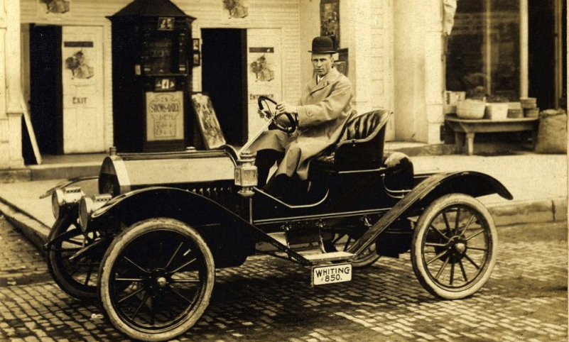
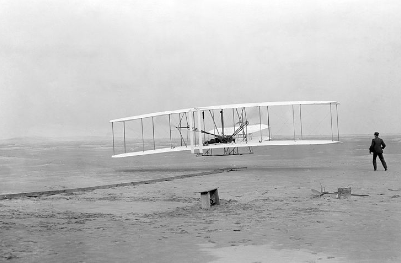
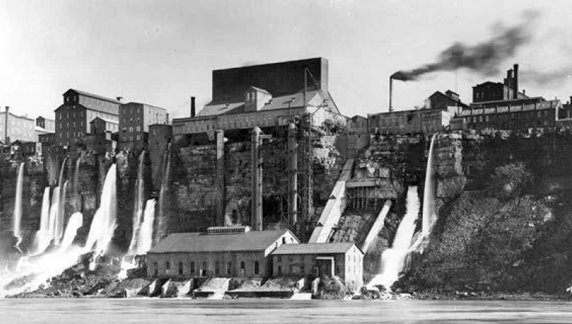
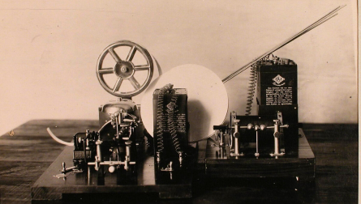
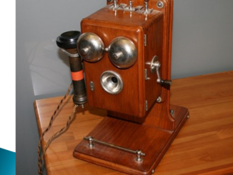

Каковы были социально-экономические последствия второй промышленной революции?
Механизация трудоемких процессов: загрузка доменных печей, разливка чугуна. Благодаря изобретениям (вращающая печь-конвертор, прокатный станок и др.) началась выплавка сверхпрочного материала-стали.


Прототип двигателя внутреннего сгорания был сконструирован 1806 г. французскими братьями Джезофом и Клодом Ньепа, но не получил развития. Затем в течение 19в. шел процесс его усовершенствования. В начале 90-х г. XIX в. немецким изобретателем Р. Дизелем был создан двигатель, получивший его имя - дизельный двигатель.
Самолет американцев Уилбера и Орвилла Райт, за которыми призанется
первенство в постройке самолета, совершившего успешный полет 17
декабря 1903 г.
Самолет американцев Уилбера и Орвилла Райт, за которыми призанется первенство в постройке самолета, совершившего успешный полет 17 декабря 1903 г.

Первая гидроэлектростанция - Ниагарская ГЭС, 1895г.
На смену каменному углю, доминирующему еще в конце XIXв., приходит нефть. Считается, что первую скважину для промышленной эксплуатации в 1858 г. построил американец Э. Дрейк.
Пар в энергетической базе производства был вытеснен электричеством.

Беспроводной телеграф А.С. Попова

Телефонный аппарат А.Белла
В 1895 г. российским ученым А.С. Поповым был представлен первый в мире прибор радиоприемного устройства для реализации беспроводного телеграфа. Годом позже итальянец Г. Маркони представил её улучшенную модель.
Первенство в изобретении телефона оспаривают три человека: итальянец А. Меуччи, немецкий физик Ф. Рейс, американец А. Белл. Именно Белл в 1878г. получил патент на это изобретение, которое в последующие годы, десятилетия будет усовершенствоваться.
Вторая промышленная революция
Технический переворот в металлургии
Изменения в транспорте
Революция в энергетике
Появление новых средств связи
Развитие такой формы организации капитала как акционирование
Новые формы организации хозяйственной деятельности - монополия
Трест
Синдикат
Картель
Концерн
Каковы были социально-экономические последствия второй промышленной революции?
«Привлечение, аккумуляция средств многих лиц и превращение их в капитал путем организации предприятия в какой-то сфере деятельности с целью получение доходов, обеспечивающих удовлетворение интересов акционеров и постоянное развитие компании»
Исключительное (монопольное) право в какой-либо сфере деятельности государства, организации; крупное хозяйственное объединение, сосредоточившее в своих руках большую часть производства и сбыта какого-либо товара, тем самым устанавливая своё господство в определенной отрасли хозяйства.
Одна из форм монополистического объединения предприятий, при которой входящие в него предприятия полностью теряют свою коммерческую самостоятельность и подчиняются единому управлению.
Одна из форм объединения предприятий, осуществляющих общую коммерческую деятельность (определение цен, закупку сырья, сбыт продукции и т.д.) при сохранении производственной самостоятельности.
Форма экономического объединения, участники которого устанавливают единые цены на продукцию, договариваются об объёмах производства, делят рынки сбыта.
Форма объединения предприятий разных отраслей, характеризуется самостоятельностью управления этих предприятий.